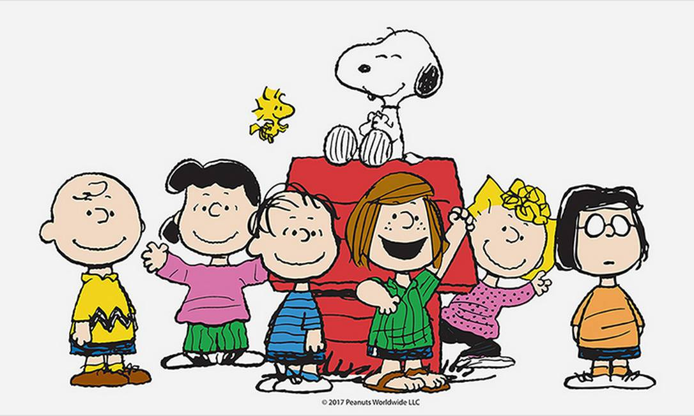

O problema do projeto é a lentidão no empréstimo de livros na biblioteca da escola e o fato dos códigos dos alunos sempre mudarem quando o cadastro precisa ser atualizado.


Snoopy nasceu em 2 de outubro de 1950, criado pelo cartunista norte-americano Charles M. Schulz.
Woodstock apareceu pela primeira vez na década de 1960, mas só foi batizado oficialmente em 1970.